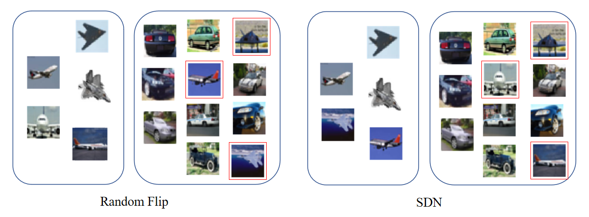
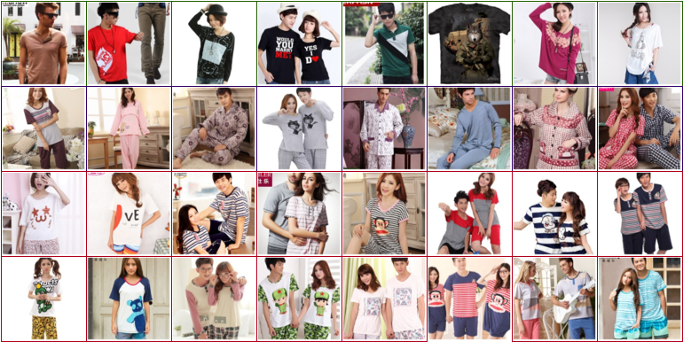
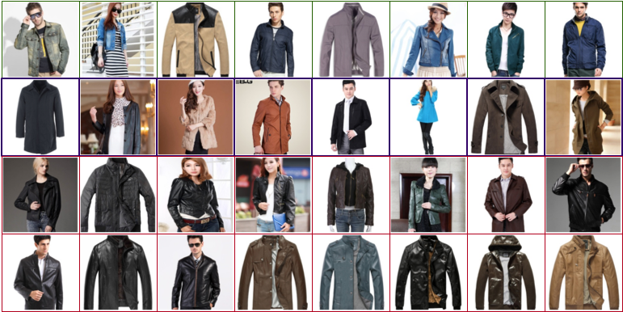
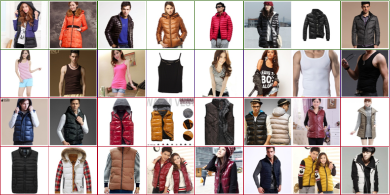
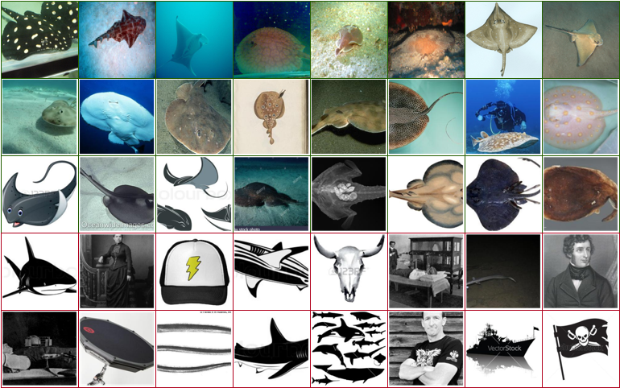
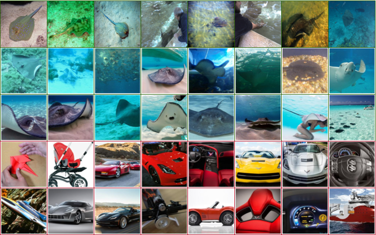
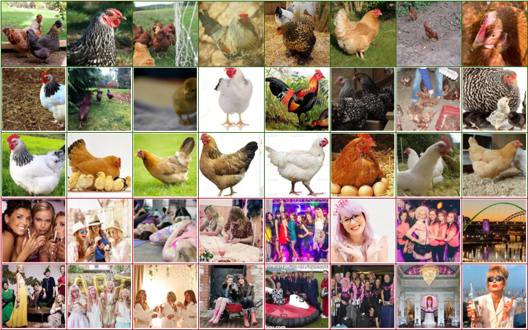

Subclass-dominant label noise (SDN) in real-world datasets
This website is dedicated to the research paper titled "Subclass-Dominant Label Noise: A Counterexample for the Success of Early Stopping." Our goal is to enhance understanding and awareness of Subclass-Dominant Label Noise (SDN) and to provide resources for effectively identifying and mitigating the impact of SDN in practical applications. By shedding light on the nuances of SDN, we hope to equip researchers and practitioners with the knowledge and tools necessary to address the challenges posed by this specific type of label noise in various real-world scenarios.
What is SDN?
Subclass-dominant label noise (SDN) describes a situation where mislabeled examples are predominant in at least one subclass within a dataset. These examples have unique features that set them apart from other samples within the same class.

Figure 1: The images above illustrate the distinction between random flipping label noise and SDN. In the case of random flipping, examples are indiscriminately chosen from the dataset. Conversely, with SDN, the selection of examples is not random; instead, it's confined to specific subclasses.
Clothing1M

Figure 2: Sleep T-Shirt. The first row displays images from the "T-Shirt" class. The second row showcases those from the "Underwear" class, while the third and fourth rows present images mislabeled as 'Underwear'. For the mislabeled pictures, it's evident that these images depict a type of shirt meant for home use, Sleep T-Shirt. After comparing images in the test set and Chinese label names, we put the correct names in parentheses.

Figure 3: Leather Jacket. The first row images are from the "Jacket" class, and the second row presents images correctly labeled as the "Windbreaker" class (correct name:"trench coat"). Clearly, these mislabeled images belong to the "Leather Jacket" subclass within the "Jacket" category.

Figure 4: Down Vest. The first row displays images from the 'Down coat' class, while the second row showcases those from the 'Vest' class (correct name:'singlet' or 'tank top'). When the 'Vest' class is absent, these mislabeled images should be classified as 'Down Vest' within the 'Down coat' class.
Mini WebVision (First 50 classes)

Figure 5: Explore images categorized under the 'Electric Ray' class. The first row showcases images sourced from the ImageNet validation set, while the second row features images from the WebVision validation set. Correctly labeled training images are in the third row, whereas the fourth and fifth rows illustrate instances of mislabeling in the training set. We can find majority of mislabeled images are in "black and white" pattern, which are close to some examples in the third row, so we call it "black and white" subclass.

Figure 6: The row structure remains consistent with the previous format. Notably, numerous cars are incorrectly classified in this category, alongside the presence of wheels and ships. The leading attribute contributing to this misclassification is likely the presence of 'curves'.

Figure 7: The row structure remains consistent with the previous format. The mislabeled subclass may derive from color attributes, such as pink or white, which serve as the decisive classification features for the 'hen' category.
Share your findings
If you encounter subclass-dominant label noise (SDN) in your datasets and are interested in sharing your findings, please feel free to reach out to me at bybeye@gmail.com. I'd be eager to discuss further!